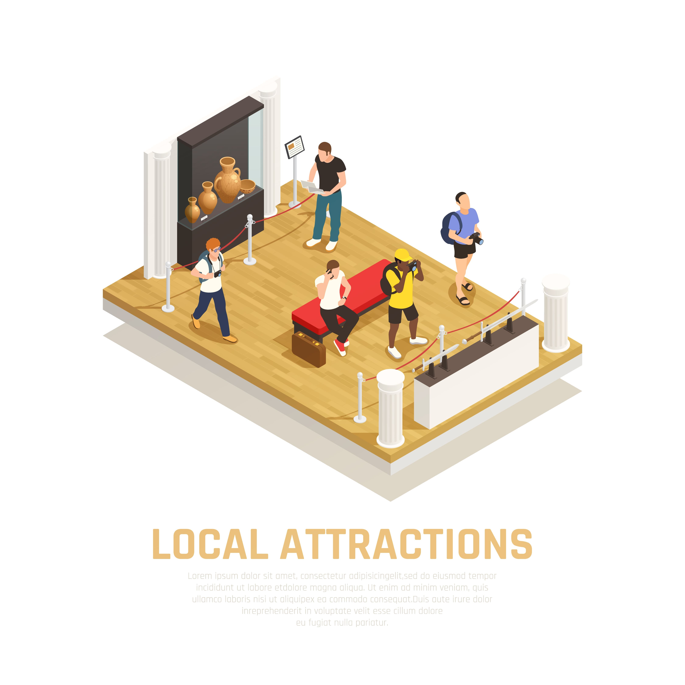

Ideias para atrações musicais em festivais e shows

Introdução:
Os festivais e shows são muito mais do que simples eventos musicais; são experiências inesquecíveis que reúnem pessoas apaixonadas por música em um ambiente de celebração e conexão. Para garantir que esses momentos sejam verdadeiramente memoráveis, é essencial oferecer atrações musicais criativas e envolventes, capazes de surpreender e encantar o público. Neste artigo, vamos explorar algumas ideias criativas que vão além das apresentações tradicionais, tornando os festivais e shows ainda mais emocionantes e marcantes.
Colaborações Surpreendentes:
Uma das formas mais emocionantes de elevar o nível das atrações musicais em festivais e shows é promovendo colaborações surpreendentes entre artistas de diferentes gêneros musicais. Imagine um palco que recebe uma fusão de estilos, onde um cantor de música pop se une a um renomado rapper, ou uma banda de rock se apresenta ao lado de um grupo de música eletrônica. Essas colaborações únicas têm o poder de criar momentos mágicos e imprevisíveis, conectando o público a novas experiências sonoras e gerando uma energia contagiante no evento.
Performances Acústicas Intimistas:
Em meio a toda grandiosidade de um festival, uma apresentação acústica intimista pode oferecer uma conexão emocional mais próxima entre o artista e o público. Criar um espaço mais íntimo, onde o foco esteja na voz e nos instrumentos dos artistas, permite que os espectadores mergulhem em um momento de pura sensibilidade musical. Essas performances podem ocorrer em palcos secundários, espaços mais aconchegantes ou mesmo em shows especiais dentro do festival, onde os artistas compartilham histórias por trás das músicas, criando uma experiência envolvente e memorável.
Bandas Cover de Sucesso:
A diversidade musical é uma das marcas registradas dos festivais e shows, e incluir bandas cover de sucesso é uma maneira divertida de agradar a diferentes públicos. Essas bandas especializadas em recriar fielmente os sucessos de artistas famosos proporcionam aos espectadores uma sensação de nostalgia e familiaridade. Imagine uma banda cover de uma icônica banda de rock dos anos 80 ou um tributo a um lendário cantor de jazz. Essas performances cativantes podem criar uma atmosfera festiva e animada, tornando o festival ainda mais inclusivo e empolgante.
Projeções Audiovisuais Imersivas:
Para proporcionar uma experiência sensorial completa, adicionar projeções audiovisuais imersivas pode transformar o cenário do festival ou show em um espetáculo visual de tirar o fôlego. Utilizando tecnologias de mapeamento de projeção, é possível projetar imagens e vídeos nas estruturas e no palco, criando uma experiência visualmente impactante e sincronizada com a música. As projeções podem complementar as performances dos artistas, criando um ambiente envolvente que transporta o público para um universo artístico único e hipnotizante.
Áreas Interativas de Música:
Para tornar a experiência do público ainda mais participativa, crie áreas interativas onde os participantes possam experimentar a música de forma criativa. Por exemplo, monte uma estação de DJ amadora, onde os fãs possam aprender a mixar suas próprias músicas e se tornarem parte da experiência musical. Outra ideia é disponibilizar instrumentos musicais para que as pessoas possam ter uma experiência prática e interativa com a música. Essas áreas permitem que os participantes se envolvam ativamente e criem uma conexão mais profunda com a música e os artistas do evento.
Artistas de Rua:
Adicionar elementos de música de rua aos festivais e shows é uma forma autêntica e emocionante de conectar o evento à cultura local e global. Convide artistas de rua talentosos, como músicos, dançarinos e percussionistas, para se apresentarem em diferentes áreas do evento. Suas performances espontâneas e energéticas podem surpreender e encantar o público, adicionando um toque de autenticidade e diversidade ao festival. Esses artistas de rua trazem consigo a arte urbana e a expressão cultural que enriquecem a experiência dos participantes.
Oferecer atrações musicais criativas e envolventes é fundamental para tornar os festivais e shows verdadeiramente inesquecíveis. As colaborações surpreendentes, performances acústicas intimistas, bandas cover de sucesso, projeções audiovisuais imersivas, áreas interativas de música e artistas de rua são apenas algumas das muitas ideias que podem enriquecer a experiência do público e criar momentos únicos e marcantes. Ao apostar na diversidade musical e na inovação artística, os organizadores podem elevar o patamar desses eventos, garantindo que os participantes vivam experiências musicais emocionantes e memoráveis que permanecerão em suas memórias por muitos anos.
conclusão
Os festivais e shows são eventos musicais repletos de magia e paixão, que reúnem pessoas de diferentes origens e gostos musicais para celebrar a música e a arte. Neste artigo, exploramos diversas ideias criativas para atrações musicais, a fim de tornar esses eventos verdadeiramente inesquecíveis para o público. Desde colaborações surpreendentes até projeções audiovisuais imersivas e artistas de rua talentosos, cada sugestão tem o poder de enriquecer a experiência dos espectadores e proporcionar momentos únicos e memoráveis.
As colaborações surpreendentes entre artistas de gêneros musicais distintos trazem uma nova dimensão aos festivais e shows, gerando conexões emocionais com o público e apresentando novas sonoridades que ampliam os horizontes musicais dos participantes. Essas parcerias únicas e imprevisíveis podem se tornar os destaques dos eventos, sendo comentadas e lembradas por muito tempo após o encerramento.
As performances acústicas intimistas são verdadeiros tesouros em meio à grandiosidade dos festivais. Proporcionam um momento de introspecção e proximidade entre os artistas e o público, permitindo que as emoções fluam em sua forma mais pura. Essas apresentações íntimas criam uma atmosfera única de cumplicidade e empatia, onde as músicas ganham uma nova dimensão e profundidade.
As bandas cover de sucesso são uma fonte inesgotável de entretenimento e nostalgia para o público. Ao recriarem fielmente os sucessos de artistas famosos, essas bandas despertam memórias afetivas e levam o público a uma viagem no tempo, relembrando momentos especiais ao som de suas músicas favoritas. Essas performances cativantes criam uma atmosfera de alegria e animação, unindo gerações e estilos musicais em uma só celebração.
As projeções audiovisuais imersivas transformam o cenário do festival ou show em uma experiência visualmente deslumbrante e sincronizada com a música. Com o uso de tecnologias de mapeamento de projeção, é possível criar um espetáculo visual único, que amplia a narrativa das performances dos artistas e transporta o público para um mundo artístico hipnotizante. Essas projeções se tornam uma verdadeira obra de arte em movimento, estimulando os sentidos e criando um ambiente envolvente e mágico.
As áreas interativas de música proporcionam ao público a oportunidade de se envolver ativamente com a música e a criação artística. As estações de DJ amadoras permitem que os fãs experimentem a arte de mixar músicas e vivenciem a sensação de estar no comando da pista de dança. A disponibilização de instrumentos musicais convida os participantes a expressarem sua criatividade e a compartilharem momentos musicais únicos com outros entusiastas. Essas experiências interativas fortalecem a conexão entre os espectadores e a música, permitindo que eles se tornem protagonistas de sua própria jornada musical.
Os artistas de rua trazem consigo a autenticidade e a essência da cultura local e global para os festivais e shows. Suas apresentações espontâneas e cheias de energia adicionam um toque de diversidade e originalidade ao evento. Ao permitir que artistas de rua talentosos se apresentem em diferentes áreas do festival, os organizadores proporcionam aos participantes um encontro com a arte urbana e a expressão cultural que enriquecem a experiência de todos os presentes.
Em suma, as ideias para atrações musicais em festivais e shows apresentadas neste artigo têm o poder de transformar esses eventos em experiências verdadeiramente memoráveis e enriquecedoras. Cada sugestão contribui para a diversidade, a inovação e a autenticidade que são essenciais para a essência dos festivais e shows. Ao pensar além das apresentações tradicionais, os organizadores têm a oportunidade de criar momentos únicos e mágicos, onde a música transcende os limites do palco e se torna uma verdadeira celebração da arte e da vida. O poder da música é imenso, e quando combinado com ideias criativas e ousadas, torna-se uma força capaz de unir pessoas, criar memórias duradouras e inspirar gerações. Portanto, que cada festival e show se torne uma experiência inesquecível, repleta de emoções e sonhos, onde a música se torna a protagonista de um espetáculo grandioso que fica para sempre na memória e no coração de todos os presentes.